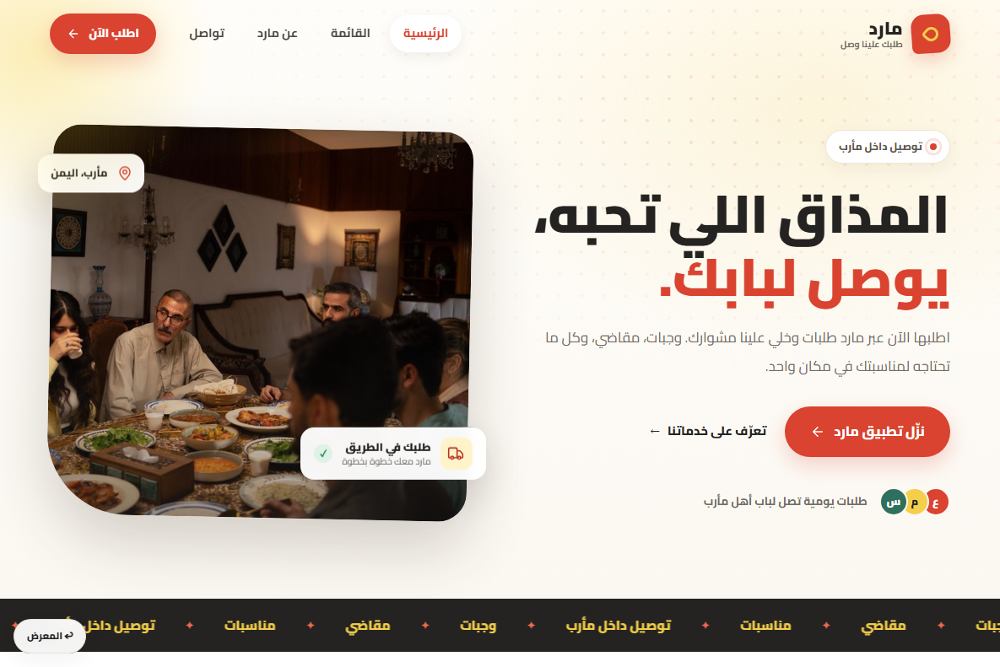
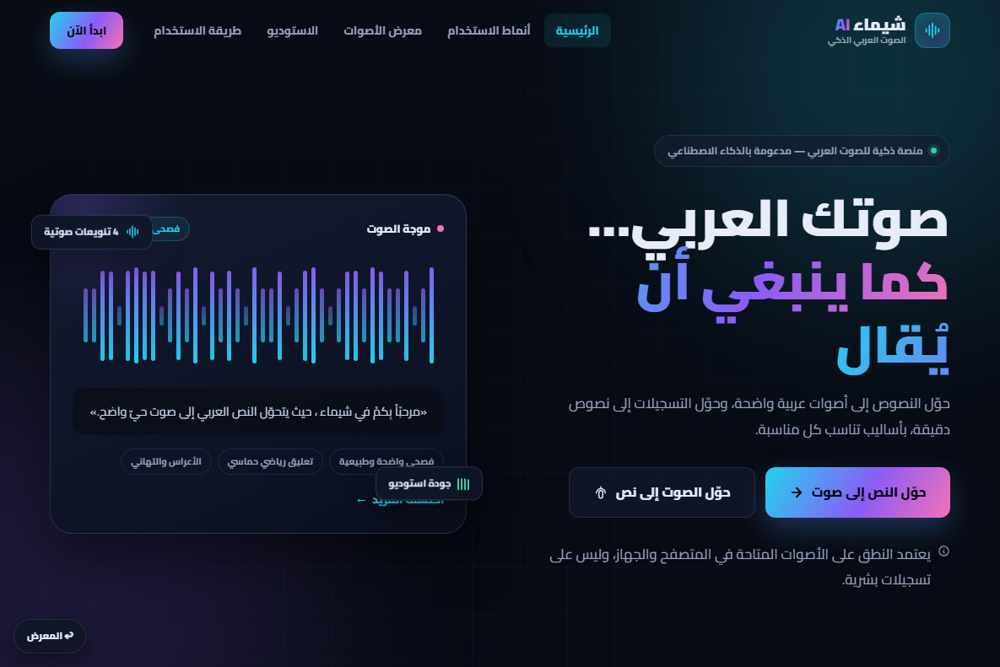
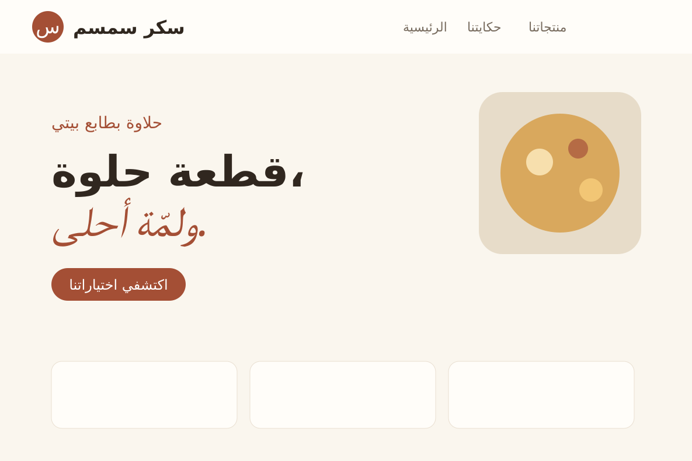
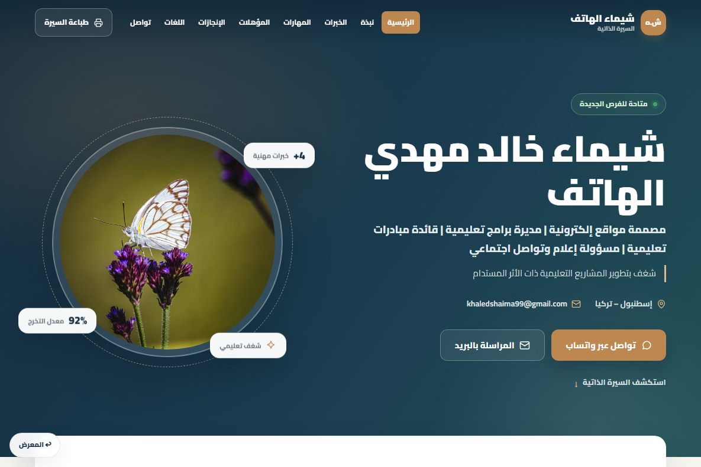

البخور والعطور
السلطانة
موقع للعطور والبخور يخدم عائلات إسطنبول الباحثة عن طلبات المناسبات. يضم صفحات للرئيسية والقائمة وعنّا وتواصل، مع ساعات عمل وخريطة وزر واتساب ثابت.
زيارة الموقع
البخور والعطور
موقع للعطور والبخور يخدم عائلات إسطنبول الباحثة عن طلبات المناسبات. يضم صفحات للرئيسية والقائمة وعنّا وتواصل، مع ساعات عمل وخريطة وزر واتساب ثابت.
زيارة الموقع
الشوكولاتة والهدايا
إيلا مساحة للهدايا والتنسيقات الفاخرة تقدّم بوكسات الشوكولاتة وتوزيعات المناسبات بتغليف مخصص وتنسيق يدوي. تشمل تشكيلتها بوكس الهدايا المخصص وتنسيق الضيافة للأعراس والتهاني والمولود الجديد.
زيارة الموقع
التعليم
منصة أُفُق التعليمية تقدّم تعليم القرآن الكريم واللغة العربية والقيم الإسلامية للأطفال عبر حصص مباشرة على الإنترنت في بيئة رقمية آمنة ومحفزة. تضم المنصة برامج تعليمية تفاعلية وتهدف إلى بناء طفل واثق بعلم نافع وقيم راسخة.
زيارة الموقع
الطلبات والتوصيل
مارد طلبات تطبيق لتوصيل الوجبات والمقاضي واحتياجات المناسبات داخل مأرب، تحت شعار «طلبك علينا وصل». يوفّر التطبيق تتبّع الطلب حتى باب المنزل ومتابعة عروض المطاعم عبر قنواته الرسمية.
زيارة الموقع
أدوات اللغة والصوت العربي
شيماء AI منصة ذكية لتحويل النصوص العربية إلى أصوات واضحة وتحويل التسجيلات إلى نصوص دقيقة، بأساليب إلقاء تناسب كل مناسبة. يوفّر استوديوها تحويلًا مع التحكم في النبرة والسرعة، مع تفريغ الصوت محليًا داخل المتصفح.
زيارة الموقع
الحلويات والمخبوزات
سكر سمسم موقع لحلويات ومخبوزات بطابع بيتي لجمعتكم ومناسباتكم، يعرض حلى المناسبات ومخبوزات السمسم والكيكات والحلى. يشرح الموقع خطوات الطلب في ثلاث مراحل ويتيح إرسال الطلب أو الاستفسار عبر واتساب.
زيارة الموقع
السيرة والملف المهني
سيرة ذاتية رقمية لشيماء خالد مهدي الهاتف، مصممة مواقع ومديرة برامج تعليمية ومسؤولة إعلام وتواصل اجتماعي في إسطنبول. تعرض الصفحة خبراتها في إدارة المركز الصيفي ومنصة أُفُق التعليمية، ومؤهلاتها في القبالة والتمريض والذكاء الاصطناعي.
زيارة الموقعالخياطة وتعديلات الملابس
لمسة قماش موقع لخدمات الخياطة والتعديلات المنزلية، يقدّم تعديلات الملابس والتفصيل حسب الطلب والرتوش والإصلاح. يمكن للزائر إرسال صورة ووصف مختصر للقطعة لترتيب موعد معاينة، والتواصل عبر واتساب.
زيارة الموقع